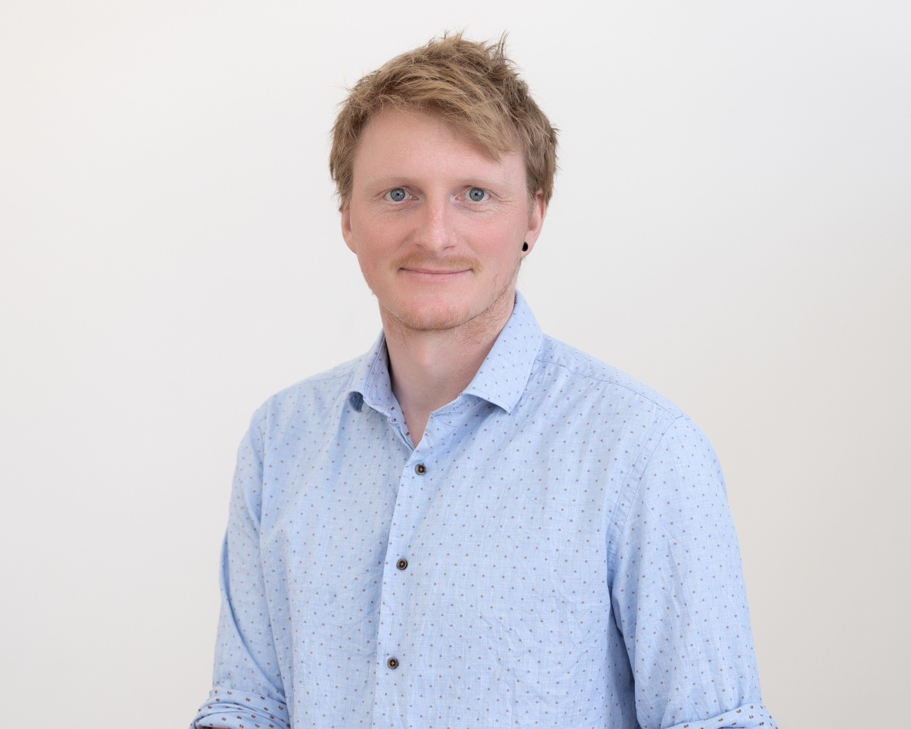

Intelligent agents must comprehend the external world and make sense of past observations in order to execute functional control and extract thermodynamic resources. Structured interactions between an agent's memory and its exterior environment allows for the creation and manipulation of complex patterns. Such an intelligent being's perception and agency is closely tied to the way in which it executes this these controlled interactions.
This workshop is dedicated to understanding how quantum physics influences an intelligent agent’s capacity to model and process physical information. It covers the use of quantum models for describing a classical world, the description of intrinsically quantum processes, thermodynamic resources and constraints, as well as the role of available control. The aim is to bring together researchers exploring different facets of this question for a workshop in Ireland. Besides participants’ individual contributions, there will be dedicated time for discussion and hands-on interaction.
Departure will be at 9 AM from Trinity College Dublin by bus.
The workshop fee of 400€ covers transport between Dublin and Birr, accommodation in Birr, and most meals during the workshop.
Felix Binder, Simon Milz, and Alec Boyd
|
|
 |
|